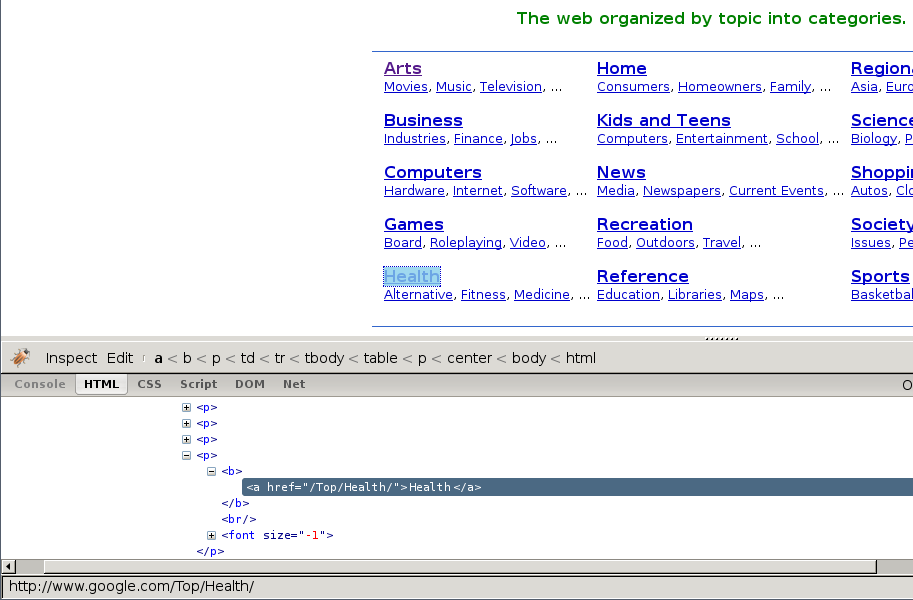

使用Firebug进行爬取¶
注解
本教程所使用的样例站Google Directory已经 被Google关闭 了。不过教程中的概念任然适用。 如果您打算使用一个新的网站来更新本教程，您的贡献是再欢迎不过了。 详细信息请参考 Contributing to Scrapy 。
介绍¶
本文档介绍了如何适用 Firebug (一个Firefox的插件)来使得爬取更为简单，有趣。 更多有意思的Firefox插件请参考 对爬取有帮助的实用Firefox插件 。 使用Firefox插件检查页面需要有些注意事项: 在浏览器中检查DOM的注意事项 。
在本样例中将展现如何使用 Firebug 从 Google Directory 来爬取数据。 Google Directory 包含了 入门教程 里所使用的 Open Directory Project 中一样的数据，不过有着不同的结构。
Firebug提供了非常实用的 检查元素 功能。该功能允许您将鼠标悬浮在不同的页面元素上， 显示相应元素的HTML代码。否则，您只能十分痛苦的在HTML的body中手动搜索标签。
在下列截图中，您将看到 检查元素 的执行效果。
首先我们能看到目录根据种类进行分类的同时，还划分了子类。
不过，看起来子类还有更多的子类，而不仅仅是页面显示的这些，所以我们接着查找:
正如路径的概念那样，子类包含了其他子类的链接，同时也链接到实际的网站中。
获取到跟进(follow)的链接¶
查看路径的URL，我们可以看到URL的通用模式(pattern):
了解到这个消息，我们可以构建一个跟进的链接的正则表达式:
directory\.google\.com/[A-Z][a-zA-Z_/]+$
因此，根据这个表达式，我们创建第一个爬取规则:
Rule(LinkExtractor(allow='directory.google.com/[A-Z][a-zA-Z_/]+$', ),
'parse_category',
follow=True,
),
Rule 对象指导基于
CrawlSpider 的spider如何跟进目录链接。
parse_category 是spider的方法，用于从页面中处理也提取数据。
spider的代码如下:
from scrapy.contrib.linkextractors import LinkExtractor
from scrapy.contrib.spiders import CrawlSpider, Rule
class GoogleDirectorySpider(CrawlSpider):
name = 'directory.google.com'
allowed_domains = ['directory.google.com']
start_urls = ['http://directory.google.com/']
rules = (
Rule(LinkExtractor(allow='directory\.google\.com/[A-Z][a-zA-Z_/]+$'),
'parse_category', follow=True,
),
)
def parse_category(self, response):
# write the category page data extraction code here
pass
提取数据¶
现在我们来编写提取数据的代码。
在Firebug的帮助下，我们将查看一些包含网站链接的网页(以 http://directory.google.com/Top/Arts/Awards/ 为例)， 找到使用 Selectors 提取链接的方法。 我们也将使用 Scrapy shell 来测试得到的XPath表达式，确保表达式工作符合预期。

正如您所看到的那样，页面的标记并不是十分明显: 元素并不包含
id ， class 或任何可以区分的属性。所以我们将使用等级槽(rank bar)作为指示点来选择提取的数据，创建XPath。
使用Firebug，我们可以看到每个链接都在 td 标签中。该标签存在于同时(在另一个 td)包含链接的等级槽(ranking bar)的 tr 中。
所以我们选择等级槽(ranking bar)，接着找到其父节点(tr)，最后是(包含我们要爬取数据的)链接的 td 。
对应的XPath:
//td[descendant::a[contains(@href, "#pagerank")]]/following-sibling::td//a
使用 Scrapy终端 来测试这些复杂的XPath表达式，确保其工作符合预期。
简单来说，该表达式会查找等级槽的 td 元素，接着选择所有 td 元素，该元素拥有子孙 a 元素，且 a 元素的属性 href 包含字符串
#pagerank 。
当然，这不是唯一的XPath，也许也不是选择数据的最简单的那个。
其他的方法也可能是，例如，选择灰色的链接的 font 标签。
最终，我们编写 parse_category() 方法:
def parse_category(self, response):
# The path to website links in directory page
links = response.xpath('//td[descendant::a[contains(@href, "#pagerank")]]/following-sibling::td/font')
for link in links:
item = DirectoryItem()
item['name'] = link.xpath('a/text()').extract()
item['url'] = link.xpath('a/@href').extract()
item['description'] = link.xpath('font[2]/text()').extract()
yield item
注意，您可能会遇到有些在Firebug找到，但是在原始HTML中找不到的元素，
例如典型的 <tbody> 元素，
或者Firebug检查活动DOM(live DOM)所看到的元素，但元素由javascript动态生成，并不在HTML源码中。
(原文语句乱了,上面为意译- -:
or tags which Therefer in page HTML
sources may on Firebug inspects the live DOM
)

{kind=link}
{kind=link}